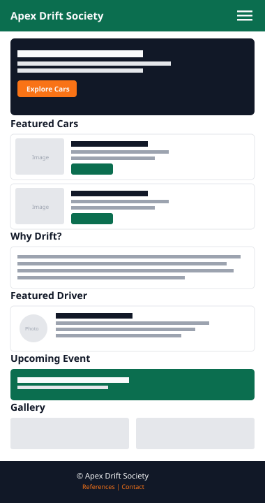
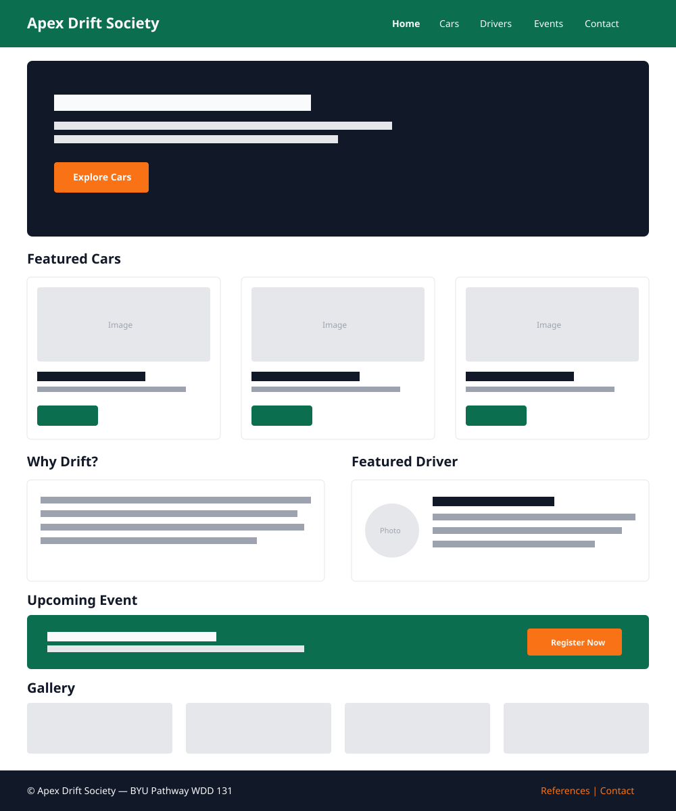

Site Name
Apex Drift Society
The name "Apex Drift Society" represents a community centered around the art and culture of drifting. The word Apex refers to the ideal point of a racing corner, symbolizing precision, control, and performance. The word Society reflects a welcoming community for both experienced enthusiasts and newcomers interested in drifting.
Optional Domain: apexdriftsociety.com
Site Purpose
Apex Drift Society is an informational website dedicated to educating visitors about professional drifting, legendary drift cars, famous drivers, and major drifting events around the world. The website will also provide beginner-friendly resources, featured vehicles, event information, and interactive features such as favorite car selection and search functionality.
Target Audience Scenarios
- Which drift car is the best choice for beginners?
- Where can I find information about upcoming drift competitions?
- Which professional drift drivers should I know about?
- How can I save my favorite drift cars while browsing the website?
Color Schema
Racing Green
#0B6E4F
Header, Navigation, Buttons
Charcoal Black
#111827
Main Background
Burnt Orange
#F97316
Hover Effects & Highlights
White Smoke
#F9FAFB
Cards & Text Backgrounds
Typography
Outfit — Heading Example
The website will use the Google Font Outfit for headings, navigation, buttons, paragraphs, and general content. Using a single font family improves performance, maintains consistency, and supports Lighthouse optimization.
Wireframes
The following wireframes illustrate the planned layout of the website in both mobile and desktop views.
Mobile View

Desktop View
